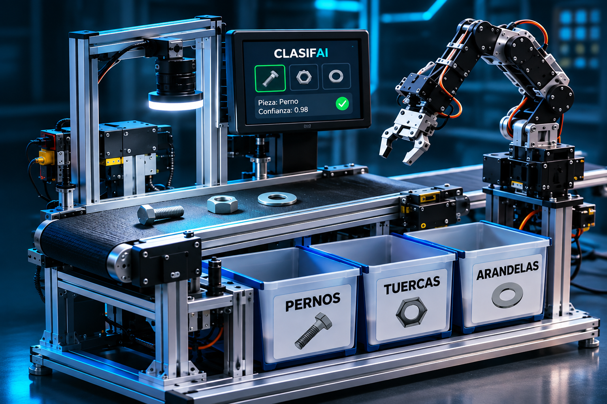
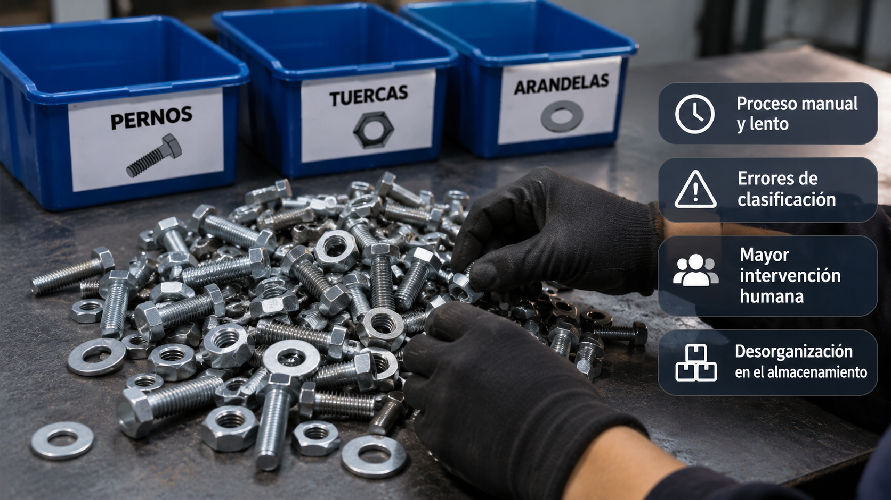
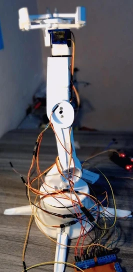
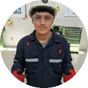

🎯
Misión
Desarrollar una solución accesible que facilite la clasificación inteligente de materiales.
CLASIFAI integra inteligencia artificial y automatización para identificar, clasificar y almacenar pernos, tuercas y arandelas.

Una propuesta de emprendimiento que une electrónica, programación y robótica.
Es un prototipo diseñado para automatizar la identificación, clasificación y almacenamiento de elementos de ferretería utilizando visión por computadora y mecanismos de control.
Buscamos facilitar la organización de piezas pequeñas y reducir las tareas manuales repetitivas en talleres y almacenes.
Desarrollar una solución accesible que facilite la clasificación inteligente de materiales.
Promover la incorporación de tecnología en procesos cotidianos de almacenamiento.
CLASIFAI responde a una necesidad real: separar piezas mezcladas de manera ordenada.

Separar las piezas a mano puede requerir tiempo y esfuerzo, además de generar equivocaciones.
Una solución que combina visión artificial, movimiento controlado y almacenamiento organizado.
Cinco etapas desde el ingreso de las piezas hasta su almacenamiento.
La tolva y el mecanismo dosificador permiten introducir las piezas.
La faja transportadora lleva las piezas hacia la cámara.
La cámara y YOLOv8 reconocen el tipo de pieza.
Un mecanismo dirige la pieza al contenedor correspondiente.
El brazo robótico traslada los contenedores completos.
Modelo de inteligencia artificial para reconocer piezas.
Procesamiento de imágenes y coordinación de visión.
Captura de imágenes en la estación de inspección.
Control del movimiento de la faja transportadora.
Control de los servomotores del brazo robótico.
Manipulación de contenedores en el almacenamiento.
Busca disminuir el tiempo de separación manual.
Busca reducir errores en la clasificación.
Facilita el almacenamiento organizado de piezas.
Integra IA, electrónica y robótica en un proceso.
Selecciona una pieza y observa cómo se asigna a su contenedor.
* Simulación ilustrativa: no utiliza cámara, no ejecuta YOLOv8 y no está conectada al prototipo físico.
Imágenes del desarrollo del prototipo CLASIFAI; incorporaremos más fotografías próximamente.
Fotografía pendiente
Captura real pendiente

Prototipo en desarrollo
Un equipo que integra electrónica, automatización, programación e innovación.

En CLASIFAI estamos desarrollando una solución tecnológica que integra visión artificial y automatización para mejorar la clasificación y organización de piezas industriales.
Y tú, ¿crees que automatizar la clasificación de piezas ayudaría a mejorar la productividad de tu empresa?